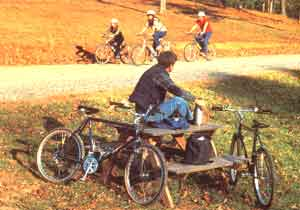
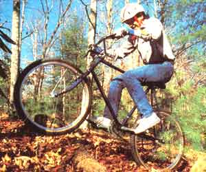
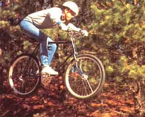
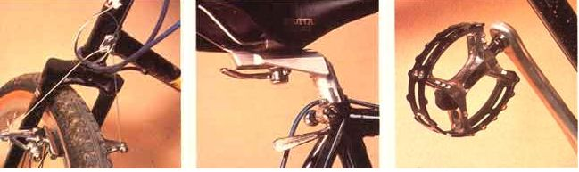
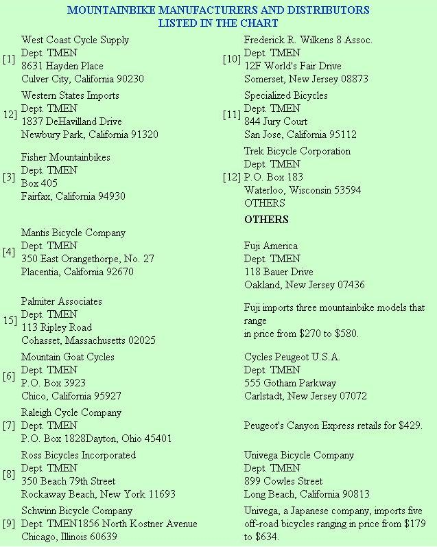
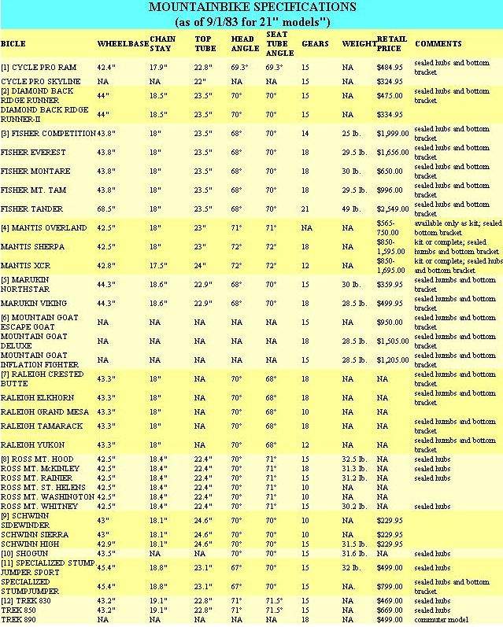

Issue # 86-March/April 1984
In the last ten years, the racing-style bicycle has become tremendously popular . . . and for good reasons. The thin-tire, spindly machines are marvels of efficiency on the high way, turning travel into a healthful and entertaining experience. However, if you've ever tried to maneuver one of these specialized machines down a dirt road (or even across the often volcanic landscape of a large city), you know that smooth pavement is just about a prerequisite for riding them.
In fact, once you trespass onto the byways, the narrow, high-pressure tires and quick-handling characteristics of a street bike can turn it into a bone-jarring torture tool that's roughly the equivalent of a mechanical rodeo bull. Worse yet, that sort of abuse takes its toll on the machine as well as on the rider. Stories of wheels collapsed against the far edge of a New York pothole are part of that city's bicycle folk legend. Yes, after one brief sojourn, street pedalers learn to steer clear of dirt roads and rough pavement.
If you graduated from training wheels a few decades ago, though, you probably started out riding a heavy, unresponsive, wide-tired single-speed machine that was difficult to develop any speed on. And if you've since experienced a modern cycle, you're not about to switch back. In nearly every respect, the old "ballooners" were inferior to the racing-style machines that have become so common today. We say nearly. . . because, as you may recall, those stable and forgiving beasts were as much at home on dirt roads (or in a pockmarked alley) as they were on pavement.
ENTER THE KLUNKER
A little less than ten years ago, a group of cyclists (many of them pavement racers) in Marin County, California got the idea of marrying racing technology with sturdy (and cheap!) old balloon-tired bikes. Riding these strange hybrids, the group took to fire roads-steep, crudely prepared paths that allow fire-fighting vehicles to get into undeveloped areas-and created a subculture of off-road bicyclists. Even more important, they started the evolution of a new sort of bicycle, one that could revolutionize the business (and may already have done so).
The modern mountainbike (also called klunker or fat-tire bike) borrows from racing, street, and bicycle motocross technology. The result is a full-sized cycle that takes on rough terrain with ease but also performs quite well on pavement.
As the accompanying chart shows, nearly all such machines have a minimum of ten different gears to choose from (the Fisher Tandem actually has 21). With two or three front sprockets and from five to seven rear ones, there's a ratio to suit just about every imaginable situation . . . from climbing steep hills at a snail's pace to plummeting down long stretches of asphalt. As compared with street cycles, mountainbikes have gears that allow slower speeds while maintaining upper ratios that exceed most bicyclist's desires or capabilities.
Most "big foot" bikes-and all of the models that we've ridden-are equipped with 27"-diameter, 2-1/8" tires that have a knobby (or dual-purpose) tread pattern for traction in dirt and are inflated to about 40 pounds per square inch (PSI). Top-notch street machines, on the other hand, use 27" X 1" or 1-1/4" rubber, with a smooth central ridge for low friction, and get at least an 80 PSI charge. The fat tires on the mountainbikes provide a much smoother ride on rough pavement, produce a small (but noticeable) increase in rolling resistance, and-not surprisingly-are much more surefooted.
Mountainbike frames are, in many cases, derived from the traditional diamond-shaped street chassis. The designs differ in several important ways, though: Generally, the mountainbike's front forks are angled forward farther from vertical for stability, its tubes are lengthened from the crank center line to the rear axle to enhance climbing ability, and its wheelbase is several inches longer overall. As a basis from which to compare the geometry listed for the machines in the chart, an average street machine has a head angle of about 74°, chain stays approximately 16" long, and a wheelbase of about 39". The major effects-in terms of steering-of the off-road cycles' deviations from these norms is that such machines are less responsive on the highway but make that sacrifice in exchange for predictable off-road handling.
To further improve control when taking on rough terrain, all mountainbikes allow a more upright riding position than the crouch used on drop-bar speedsters. The handlebars are similar to those found on motorcycles, and in many cases manufacturers have used controls from the engine-powered machines, as well. For most people, the mountainbike position will prove to be more comfortable on or off the highway. Because the rider isn't bent so far forward, there's less pressure on the wrists, and the angle and position of the seat become less critical for comfort (mountainbike seats also often have quick-release mechanisms that allow rapid movement up and down, and sometimes even fore and aft). Of course, the price one pays for the relaxed mountainbike riding position is increased wind resistance, the single greatest retarding force at highway cruising speeds. Around town, this usually isn't too noticeable . . . but on long highway tours it's a serious handicap.
Another difference between on-and off-road bikes shows up in their brakes. The familiar center-and side-pull binders of street machines can't reach around the fat tires on a mountainbike, so a different approach is used . . . cantilever brakes. These consist of separate mechanisms attached to each side of the frame. One wing of a cable with a "Y" extends to each arm to permit the shoes to push against the rim with equal pressure. Because the cantilever brakes are solidly mounted and have short arms, they flex very little. The result is stronger, more sensitive braking than can be found on most quality street machines. When you add this attribute to the mountainbike's wider tires and more stable frame geometry, you get a cycle that can significantly outbrake its highway competitors . . . even in their own element.
There are also a number of ways in which mountainbikes have been made stronger that conventional street cycles, to withstand the punishment of energetic off-road riding. The frames usually have oversized, chrome-molybdenum steel tubes with thicker walls . . wheel spokes are larger in diameter and laces in stronger patterns . . . axles are solid rather than hollow . . . and headset bearings are often larger. Some of the more expensive machines even have sealed hubs and bottom brackets to protect those precision parts from grit and water. When you're shopping, bi sure to ask whether the bearings themselves, are sealed or if the mechanisms are just fitter with protective cups. Sealed bearings are more effective, but either approach is better than no protection at all.
These reinforcements make mountainbike very durable under any imaginable conditions. Unfortunately, the same measures also add weight. Compared with street machines; a mountainbike costing about the same amount of money will be roughly five pound; heavier. Still, a 30-pound bicycle is a real delight if you grew up on a 45-pound paper boy special. And if you've never had the pleasure of riding a top-notch bike-street or dirt-you'll be amazed how easily you're able to cover ground.
TESTING SIX
A number of MOTHER's staff' members are avid street cyclists, but until the summer of 1983 we were all of road bicycling neophytes. Fortunately (for us), several mountainbike manufacturers and/or distributors were nice enough to lend us machines . . . and we set to work at becoming familiar with this unique mode of transportation. Through the fall of 1983, we put many miles on the cycles and had a tremendous amount of fun doing it. (In fact, as of this writing, four of MOTHER's crew have already bought, or are planning to buy, mountainbikes of their own.)
We all felt particularly lucky to try out a bicycle manufactured by some of the founders of the mountainbike movement: Gary Fisher and Tom Ritchey. The $996 Fisher Mountainbikes Mt. Tam, with a hand-built Tom Ritchey frame, is-surprisingly enough-only the middle of their line, but everyone who's ridden it has been amazed by its handling and quality. The Ritchey frame has been in development longer than any other mountainbike chassis, and that experience shows. Its geometry is similar to that of many others . . . which only proves there's more to building a great-handling frame than simply following the numbers. The Mt. Tam managed to turn quickly under almost any conditions, while showing trustworthy stability. At the same time, the frame felt stiff but cleared bumps with less jolting than did others, suggesting that it flexed in just the right way. One rider commented, "Even if you don't bother to look at the fine workmanship, you can feel quality when you ride it. It's nice to know that excellence is still available."
Trek Bicycle Corporation has a solid reputation for building quality street machines, and their model 850 mountainbike shows that fine heritage in its welding and fabrication. What's more, the machine's components are nearly identical to those found on the Fisher Mt, Tam, but the package costs $327 less. Many of our stay cyclists found its geometry to their liking. The Trek's steep head and seat-tube angles and long chain stays do favor climbing over des cents, and they also make the bike one of the best dirt road and pavement combination machines of the bunch we tested.
Marukin's U.S. importer (this Japanese firm has been building bikes for 75 years, but has just begun shipping them here) sent us both of the company's 1984 mountainbikes to try out, and the machines proved to be some of the best buys of the lot. The Marukin Northstar is, at $359.95, the least expensive mountambike of those we tested and has a compromise pavement/dirt geometry that was also to the liking of' riders who get a kick out of fast downhills. Both Marukins come fitted with combination street/dirt tires, which have knobs around the periphery and a central ridge for street riding. At 40 PSI or less, the knobs hook into the dirt adequately, and at higher pressures the ridge reduces rolling friction on the road. The two Marukin cycles share nearly identical chrome-molybdenum steel frames, with the Viking getting upgraded components. Both machines, however, did have handgrips and saddles that received few positive reviews from MOTHER's impromptu panel of critics.
The Specialized Stumpjumper was-its makers attest-designed for all-out, high-speed off-road riding. Its frame is long and the fork is angled well forward (at 67°), making it stable when descending steep, rock-strewn hills. The fit and finish on this $800 cycle are excellent (as you'd hope!), and the machine has some exceptionally nice touches, such as the dustcovers on its brake levers. Unlike the other mountambikes we've ridden, the Stumpjumper features tubular aluminum handlebars, which absorb quite a bit of shock by flexing. On the other hand, the specialized bike is fitted with Sun Tour shifters, which don't work as well as the slightly more expensive Shimano Deore XT levers common to the other over-$500 bicycles.
In addition to the bikes that were lent to us, one of our staff members has had his own Ross Hi-Tech Mt. Whitney for six months now and notes that he wouldn't be willing to trade it for any of the bikes we tried out. In fact, some of us felt that the Ross's all-round handling equaled the Ritchey's, hitting that nice balance between stability and maneuverability. For the price (just over $500), its components are top-notch, and the bike has a chrome-plated frame that's proved to be very easy to maintain. It does, however, come equipped with dual-purpose tires that are marginal in difficult off-road situations.
TREAD LIGHTLY
Riding a mountainbike on trails is an exhilarating experience, one that's not unlike piloting a trail motorcycle. And, to its credit, the bicycle is quiet and-being light and without great horsepower-doesn't erode or compress earth to the extent that a motorcycle does. Nonetheless, there are places where mountainbikes should, and shouldn't, be ridden. To date, rules about bicycle riding on public lands are fuzzy, so we'd like to suggest a few guidelines. Hiking and mechanized travel don't mix, so bicyclists should avoid trails where they're likely to encounter people walking. Furthermore, wet lowlands should be avoided, since the tires of bicycles can penetrate soggy ground. (Besides, riding a mountainbike in mud is less than rewarding!) On the whole, places where horses are ridden should, from an environmental standpoint, be able to withstand bicycle travel, though participants in the two forms of transport should be considerate of the difficulties each poses to the other. And, of course, any trails open to motorized vehicles aren't likely to suffer from bicycle travel . . . though they might prove dangerous to the pedal-powered traveler.
It's pleasant to be able to report that mountainbike manufacturers are showing concern for the problems that this rapidly growing sport could create, as evidenced by a letter accompanying the Mantis Bicycle Company brochure: "The wilderness experience is a shared activity. The future of off-road cycling will be assured if all of us can display an attitude of cooperation toward the noncyclists we encounter on the trail, and develop an awareness of the laws governing the areas in which we ride."
TRANSPORT OR SPORT?
You could buy a mountainbike to solve your transportation needs. The high-tech klunkers are ideally suited to short commutes over dirt roads or rough pavement . . . and even allow you the luxury of taking to the ditch on heavily traveled highways, jumping curbs in the suburban landscape, or cutting across fields and vacant lots when necessary. The slightly increased tire friction and sometimes significant aerodynamic drag will, however, keep most people from using mountainbikes as long-distance highway-touring mounts.
Frankly, though, we're hard-pressed to imagine anyone buying one of these somewhat expensive (even at the low end of the price range) cycles for purely utilitarian purposes. But as dual-purpose machines-say, for commuting on weekdays and for outdoor recreation on weekends-we think they're a really great buy . . . we've never had so much fun staying healthy!
EDITOR'S NOTE: We'd like to extend our thanks to two Asheville, North Carolina bicycle shops that have given invaluable information and assistance in the preparation of this article. J.M. Hearn & Company, a regular stop for, MOTHER's street riders, has offered advice freely and even lent us its mechanic - a local bicycle motorcross expert - for photographs. Liberty Corner Bicycles, the local haven for mountainbike enthusiasts, has taught us much about the design and workings of the machines and has been there when we needed inner tubes, cables, and the like.
|
 STAFF PHOTO Most mountainbike users will likely employ their machines as transportation across the sortof roads (and nonroads) that would thwart skinnier-tired and more delicately framed ""traditional"" multi- speed bikes. |
 However, mountainbikes can handle really rugged off-road terrain and are capable of doing so at speed. The future of off-road pedal-powered sports, though, will be determined by the level of environmental awareness shown by the riders of today. |
 Powerful cantilever brakes . . . seats that adjust quickly up or down (or even forward and back) . . . and open, toothed, ""bear trap"" pedals are components to look for. |
|
 |
 |
 |